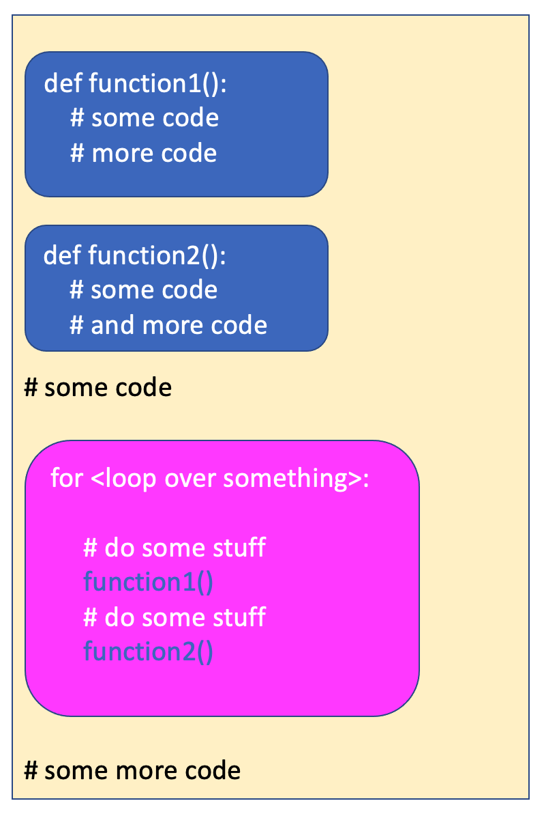
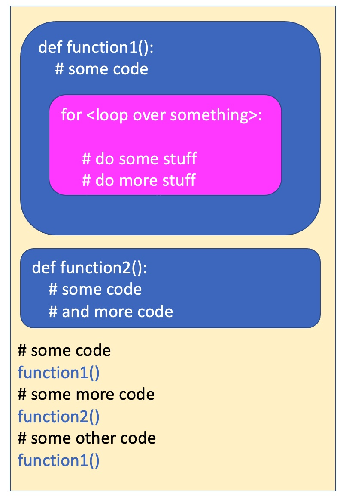

7.2. Combining Iterations and Functions¶
In this section, we will talk about when to use iteration (for loops) vs. when to use functions. We will also look at examples where:
Inside an iterating for loop, we invoke a function
Inside a function, we use iteration
7.2.1. Code Re-Use¶
Both functions and iteration are ways to avoid typing the same (or very similar) lines of code over and over again. This is important because if you have similar lines of code and you discover a bug in one of them, or decide to make a change, you have to make that change in all of them. Whenever you are writing code, if you find yourself writing the same (or very similar) lines of code over and over again, you can probably simplify your code, either by putting that code into a function, or by putting that code inside a loop.
So, if you need to do something multiple times, should you put the code in a loop or in a function? Here are a few ways to think about this:
if the code performs a specific, well-defined task, it should likely go in a function.
if the code may need to be reused at different times, or called from different places in your program, it should likely go in a function
If the code needs to be repeated (over and over again at the same time) across a range of values that change, you probably need a loop in order to step through that range of values. The values might be a numerical range, the items in a list or the characters in a string. In any of these cases you likely need a loop.
7.2.2. Invoking Functions Inside Loops¶
A common pattern is to have a loop that iterates through a set of values (a range of numbers, a list of items or the characters in a string), and for each item in that set, call a function to do something. That looks like this:
{kind=link}
Remember that to follow Python conventions, we want to declare functions at the top of the script. Then we can call the functions anywhere else in the program, including inside of loops.
Here is an example of this:
That’s not a very exciting example, but it demonstrates a few things:
giving functions meaninful names - the function gets input and cubes it
not repeating code - the function is called five times from inside a loop. The function is only four lines of code, but if it was repeated five times, it would be 20 lines of code. The code inside the function doesn’t know the round number. It doesn’t need to.
use of the exponent operator ( ** )
using variable names that contain the type, to avoid confusion (input_string and input_num).
Let’s look at a turtle example, with a few different functions called from inside a loop.
The example above demonstrates the following:
looping a number of times that varies depending on user input
calling multiple different functions within a loop
creating a list (of some shapes the turtle can be) and using the [] operator to index into it
using the modulo operator (%), in this case to keep the index value between 0 and 3 so we keep cycling between four different turtle stamps in the list
using the random module to get random numbers in a range (in this case random x and y coordinates that aren’t too close to the edges of the turtle canvas)
using the hideturtle() method to make the turtle disappear at the end of the script
proper use of docstrings commenting for each function
7.2.3. Iterating Inside Functions¶
Just as you can have function calls inside loops, you can also have loops inside functions. That looks like this:
{kind=link}
Here is a modification of the turtle program from above that makes use of a loop inside a function, as well as a loop in the main code that calls the function:
The example above demonstrates the following:
a loop in the main part of the program that causes five stamps to be drawn
a loop in the stampy function that rotates and stamps the turtle 6 times
using a random value to index into the list of stamp shapes
a different sequence from the prior example, here we move the turtle to the new location then change its shape and color
Check your understanding
- None
- The turtle definitely makes some stamps
- 6
- Every time the stampy function is called, the turtle makes 6 stamps, but the stampy function is called multiple times
- 5
- The stampy function is called 5 times, but then in the stampy function the turtle stamps more than once.
- 30
- Yes, the stampy function is called 5 times, and in the function the turtle stamps 6 times, so that is 30 stamps!
- undetermined
- This program doesn't stamp a random number of times, so you can determine the number of stamps.
In the last turtle program above, how many times does the turtle stamp?